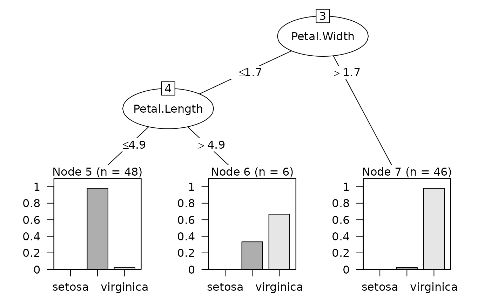
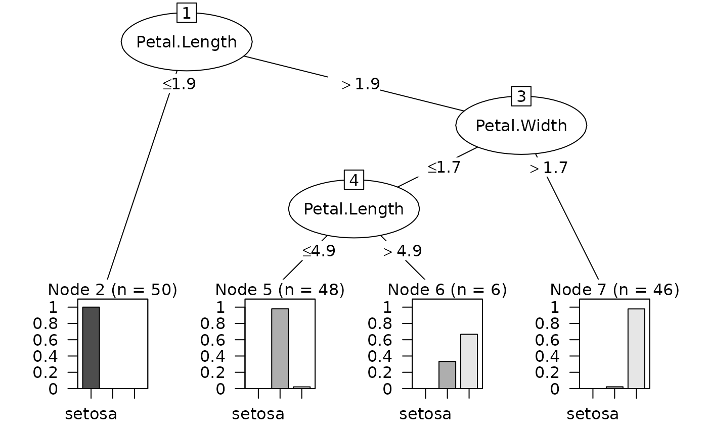
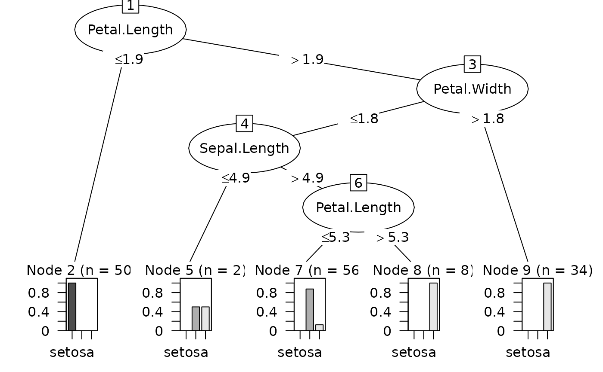

Plot a decision tree.
# S3 method for C5.0 plot(x, trial = 0, subtree = NULL, ...)
| x | an object of class |
|---|---|
| trial | an integer for how many boosting iterations are
used for prediction. NOTE: the internals of |
| subtree | an optional integer that can be used to isolate
nodes below the specified split. See
|
| ... | options passed to |
No value is returned; a plot is rendered.
Quinlan R (1993). C4.5: Programs for Machine Learning. Morgan Kaufmann Publishers, http://www.rulequest.com/see5-unix.html
Mark Culp, Max Kuhn
